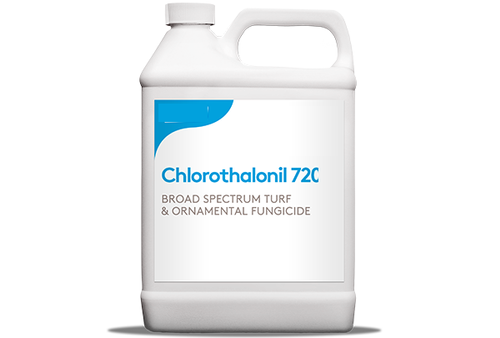
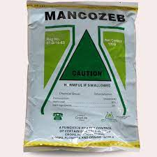

Prevention
-
Chlorothalonil and mancozeb are the main protectant fungicides for downy mildew.
- Copper is not as effective.
- Most fungicides labeled for downy mildew are also labeled for Phytophthora blight, which is caused by a related (oomycete) pathogen.

Chlorothalonil |

Mancozeb |